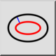
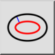
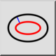
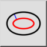

Courbe parallèle (distance)
Barre d'outil / icône :
 

Menu : Dessin > Ellipse > Courbe parallèle (distance)
Raccourci : E, C
Commandes : ellipseoffset | ec
Ceci est une traduction automatique.
Barre d'outil / icône :
 

Menu : Dessin > Ellipse > Courbe parallèle (distance)
Raccourci : E, C
Commandes : ellipseoffset | ec
Avec cet outil, vous pouvez créer une ou plusieurs courbes parallèles avec une distance donnée par rapport à une ellipse existante.